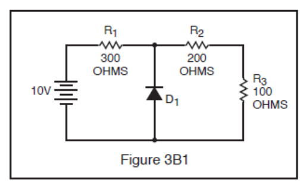
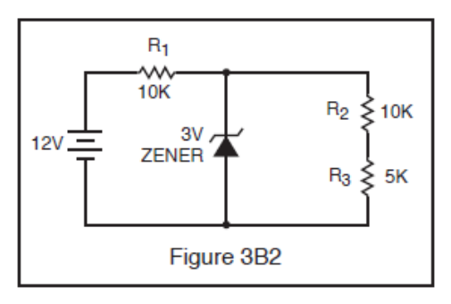
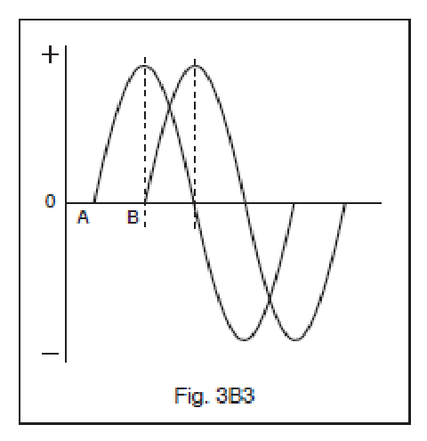

All 60 FCC GROL questions for 3B Electrical Math with the correct answers marked, from the official current FCC question pool. Test yourself with the free practice exam.
3-9B1
What value of series resistor would be needed to obtain a full scale deflection on a 50 microamp DC meter with an applied voltage of 200 volts DC?
A. 4 megohms. ✓
B. 2 megohms.
C. 400 kilohms.
D. 200 kilohms.
3-9B2
Which of the following Ohms Law formulas is incorrect?
A. I = E / R
B. I = R / E ✓
C. E = I x R
D. R = E / I
3-9B3
If a current of 2 amperes flows through a 50-ohm resistor, what is the voltage across the resistor?
A. 25 volts.
B. 52 volts.
C. 200 volts.
D. 100 volts. ✓
3-9B4
If a 100-ohm resistor is connected across 200 volts, what is the current through the resistor?
A. 2 amperes. ✓
B. 1 ampere.
C. 300 amperes.
D. 20,000 amperes.
3-9B5
If a current of 3 amperes flows through a resistor connected to 90 volts, what is the resistance?
A. 3 ohms.
B. 30 ohms. ✓
C. 93 ohms.
D. 270 ohms.
3-9B6
A relay coil has 500 ohms resistance, and operates on 125 mA. What value of resistance should be connected in series with it to operate from 110 V DC?
A. 150 ohms.
B. 220 ohms.
C. 380 ohms. ✓
D. 470 ohms.
3-10B1
What is the peak-to-peak RF voltage on the 50 ohm output of a 100 watt transmitter?
A. 70 volts.
B. 100 volts.
C. 140 volts.
D. 200 volts. ✓
3-10B2
What is the maximum DC or RMS voltage that may be connected across a 20 watt, 2000 ohm resistor?
A. 10 volts.
B. 100 volts.
C. 200 volts. ✓
D. 10,000 volts.
3-10B3
A 500-ohm, 2-watt resistor and a 1500-ohm, 1-watt resistor are connected in parallel. What is the maximum voltage that can be applied across the parallel circuit without exceeding wattage ratings?
A. 22.4 volts.
B. 31.6 volts. ✓
C. 38.7 volts.
D. 875 volts.
3-10B4
In Figure 3B1, what is the voltage drop across R1?

A. 9 volts.
B. 7 volts.
C. 5 volts. ✓
D. 3 volts.
3-10B5
In Figure 3B2, what is the voltage drop across R1?

A. 1.2 volts.
B. 2.4 volts.
C. 3.7 volts.
D. 9 volts. ✓
3-10B6
What is the maximum rated current-carrying capacity of a resistor marked “2000 ohms, 200 watts”?
A. 0.316 amps. ✓
B. 3.16 amps.
C. 10 amps.
D. 100 amps.
3-11B1
What is the most the actual transmit frequency could differ from a reading of 462,100,000 Hertz on a frequency counter with a time base accuracy of ± 0.1 ppm?
A. 46.21 Hz. ✓
B. 0.1 MHz.
C. 462.1 Hz.
D. 0.2 MHz.
3-11B2
The second harmonic of a 380 kHz frequency is:
A. 2 MHz.
B. 760 kHz. ✓
C. 190 kHz.
D. 144.4 GHz.
3-11B3
What is the second harmonic of SSB frequency 4146 kHz?
A. 8292 kHz. ✓
B. 4.146 MHz.
C. 2073 kHz.
D. 12438 kHz.
3-11B4
What is the most the actual transmitter frequency could differ from a reading of 156,520,000 hertz on a frequency counter with a time base accuracy of ± 1.0 ppm?
A. 165.2 Hz.
B. 15.652 kHz.
C. 156.52 Hz. ✓
D. 1.4652 MHz.
3-11B5
What is the most the actual transmitter frequency could differ from a reading of 156,520,000 Hertz on a frequency counter with a time base accuracy of +/- 10 ppm?
A. 146.52 Hz.
B. 1565.20 Hz. ✓
C. 10 Hz.
D. 156.52 kHz.
3-11B6
What is the most the actual transmitter frequency could differ from a reading of 462,100,000 hertz on a frequency counter with a time base accuracy of ± 1.0 ppm?
A. 46.21 MHz.
B. 10 Hz.
C. 1.0 MHz.
D. 462.1 Hz. ✓
3-12B1
At pi/3 radians, what is the amplitude of a sine-wave having a peak value of 5 volts?
A. -4.3 volts.
B. -2.5 volts.
C. +2.5 volts.
D. +4.3 volts. ✓
3-12B2
At 150 degrees, what is the amplitude of a sine-wave having a peak value of 5 volts?
A. -4.3 volts.
B. -2.5 volts.
C. +2.5 volts. ✓
D. +4.3 volts.
3-12B3
At 240 degrees, what is the amplitude of a sine-wave having a peak value of 5 volts?
A. -4.3 volts. ✓
B. -2.5 volts.
C. +2.5 volts.
D. +4.3 volts.
3-12B4
What is the equivalent to the root-mean-square value of an AC voltage?
A. AC voltage is the square root of the average AC value.
B. The DC voltage causing the same heating in a given resistor at the peak AC voltage.
C. The AC voltage found by taking the square of the average value of the peak AC voltage.
D. The DC voltage causing the same heating in a given resistor as the RMS AC voltage of the same value. ✓
3-12B5
What is the RMS value of a 340-volt peak-to-peak pure sine wave?
A. 170 volts AC.
B. 240 volts AC.
C. 120 volts AC. ✓
D. 350 volts AC.
3-12B6
Determine the phase relationship between the two signals shown in Figure 3B3.

A. A is lagging B by 90 degrees.
B. B is lagging A by 90 degrees. ✓
C. A is leading B by 180 degrees.
D. B is leading A by 90 degrees.
3-13B1
What does the power factor equal in an R-L circuit having a 60 degree phase angle between the voltage and the current?
A. 0.414
B. 0.866
C. 0.5 ✓
D. 1.73
3-13B2
If a resistance to which a constant voltage is applied is halved, what power dissipation will result?
A. Double. ✓
B. Halved.
C. Quadruple.
D. Remain the same.
3-13B3
746 watts, corresponding to the lifting of 550 pounds at the rate of one-foot-per-second, is the equivalent of how much horsepower?
A. One-quarter horsepower.
B. One-half horsepower.
C. Three-quarters horsepower.
D. One horsepower. ✓
3-13B4
In a circuit where the AC voltage and current are out of phase, how can the true power be determined?
A. By multiplying the apparent power times the power factor. ✓
B. By subtracting the apparent power from the power factor.
C. By dividing the apparent power by the power factor.
D. By multiplying the RMS voltage times the RMS current.
3-13B5
What does the power factor equal in an R-L circuit having a 45 degree phase angle between the voltage and the current?
A. 0.866
B. 1.0
C. 0.5
D. 0.707 ✓
3-13B6
What does the power factor equal in an R-L circuit having a 30 degree phase angle between the voltage and the current?
A. 1.73
B. 0.866 ✓
C. 0.5
D. 0.577
3-14B1
What is the term for the time required for the capacitor in an RC circuit to be charged to 63.2% of the supply voltage?
A. An exponential rate of one.
B. One time constant. ✓
C. One exponential period.
D. A time factor of one.
3-14B2
What is the meaning of the term “time constant of an RC circuit”? The time required to charge the capacitor in the circuit to:
A. 23.7% of the supply voltage.
B. 36.8% of the supply voltage.
C. 57.3% of the supply voltage.
D. 63.2% of the supply voltage. ✓
3-14B3
What is the term for the time required for the current in an RL circuit to build up to 63.2% of the maximum value?
A. One time constant. ✓
B. An exponential period of one.
C. A time factor of one.
D. One exponential rate.
3-14B4
What is the meaning of the term “time constant of an RL circuit”? The time required for the:
A. Current in the circuit to build up to 36.8% of the maximum value.
B. Voltage in the circuit to build up to 63.2% of the maximum value.
C. Current in the circuit to build up to 63.2% of the maximum value. ✓
D. Voltage in the circuit to build up to 36.8% of the maximum value.
3-14B5
After two time constants, the capacitor in an RC circuit is charged to what percentage of the supply voltage?
A. 36.8 %
B. 63.2 %
C. 86.5 % ✓
D. 95 %
3-14B6
After two time constants, the capacitor in an RC circuit is discharged to what percentage of the starting voltage?
A. 86.5 %
B. 13.5 % ✓
C. 63.2 %
D. 36.8 %
3-15B1
What is the time constant of a circuit having two 220-microfarad capacitors and two 1-megohm resistors all in parallel?
A. 22 seconds.
B. 44 seconds.
C. 440 seconds.
D. 220 seconds. ✓
3-15B2
What is the time constant of a circuit having two 100-microfarad capacitors and two 470-kilohm resistors all in series?
A. 470 seconds.
B. 47 seconds. ✓
C. 4.7 seconds.
D. 0.47 seconds.
3-15B3
What is the time constant of a circuit having a 100-microfarad capacitor and a 470-kilohm resistor in series?
A. 4700 seconds.
B. 470 seconds.
C. 47 seconds. ✓
D. 0.47 seconds.
3-15B4
What is the time constant of a circuit having a 220-microfarad capacitor and a 1-megohm resistor in parallel?
A. 220 seconds. ✓
B. 22 seconds.
C. 2.2 seconds.
D. 0.22 seconds.
3-15B5
What is the time constant of a circuit having two 100-microfarad capacitors and two 470-kilohm resistors all in parallel?
A. 470 seconds.
B. 47 seconds. ✓
C. 4.7 seconds.
D. 0.47 seconds.
3-15B6
What is the time constant of a circuit having two 220-microfarad capacitors and two 1-megohm resistors all in series?
A. 220 seconds. ✓
B. 55 seconds.
C. 110 seconds.
D. 440 seconds.
3-16B1
What is the impedance of a network composed of a 0.1-microhenry inductor in series with a 20-ohm resistor, at 30 MHz? Specify your answer in rectangular coordinates.
A. 20 -j19
B. 19 +j20
C. 20 +j19 ✓
D. 19 -j20
3-16B2
In rectangular coordinates, what is the impedance of a network composed of a 0.1-microhenry inductor in series with a 30-ohm resistor, at 5 MHz?
A. 30 -j3
B. 3 +j30
C. 3 -j30
D. 30 +j3 ✓
3-16B3
In rectangular coordinates, what is the impedance of a network composed of a 10-microhenry inductor in series with a 40-ohm resistor, at 500 MHz?
A. 40 +j31400 ✓
B. 40 -j31400
C. 31400 +j40
D. 31400 -j40
3-16B4
In rectangular coordinates, what is the impedance of a network composed of a 1.0-millihenry inductor in series with a 200-ohm resistor, at 30 kHz?
A. 200 - j188
B. 200 + j188 ✓
C. 188 + j200
D. 188 - j200
3-16B5
In rectangular coordinates, what is the impedance of a network composed of a 0.01-microfarad capacitor in parallel with a 300-ohm resistor, at 50 kHz?
A. 150 - j159
B. 150 + j159
C. 159 - j150 ✓
D. 159 + j150
3-16B6
In rectangular coordinates, what is the impedance of a network composed of a 0.001-microfarad capacitor in series with a 400-ohm resistor, at 500 kHz?
A. 318 - j400
B. 400 + j318
C. 318 + j400
D. 400 - j318 ✓
3-17B1
What is the impedance of a network composed of a 100-picofarad capacitor in parallel with a 4000-ohm resistor, at 500 KHz? Specify your answer in polar coordinates.
A. 2490 ohms, /51.5 degrees
B. 4000 ohms, /38.5 degrees
C. 5112 ohms, /-38.5 degrees
D. 2490 ohms, /-51.5 degrees ✓
3-17B2
In polar coordinates, what is the impedance of a network composed of a 100-ohm-reactance inductor in series with a 100-ohm resistor?
A. 121 ohms, /35 degrees
B. 141 ohms, /45 degrees ✓
C. 161 ohms, /55 degrees
D. 181 ohms, /65 degrees
3-17B3
In polar coordinates, what is the impedance of a network composed of a 400-ohm-reactance capacitor in series with a 300-ohm resistor?
A. 240 ohms, /36.9 degrees
B. 240 ohms, /-36.9 degrees
C. 500 ohms, /-53.1 degrees ✓
D. 500 ohms, /53.1 degrees
3-17B4
In polar coordinates, what is the impedance of a network composed of a 300-ohm-reactance capacitor, a 600-ohm-reactance inductor, and a 400-ohm resistor, all connected in series?
A. 500 ohms, /37 degrees ✓
B. 400 ohms, /27 degrees
C. 300 ohms, /17 degrees
D. 200 ohms, /10 degrees
3-17B5
In polar coordinates, what is the impedance of a network comprised of a 400-ohm-reactance inductor in parallel with a 300-ohm resistor?
A. 240 ohms, /-36.9 degrees
B. 240 ohms, /36.9 degrees ✓
C. 500 ohms, /53.1 degrees
D. 500 ohms, /-53.1 degrees
3-17B6
Using the polar coordinate system, what visual representation would you get of a voltage in a sinewave circuit?
A. To show the reactance which is present.
B. To graphically represent the AC and DC component.
C. To display the data on an XY chart.
D. The plot shows the magnitude and phase angle. ✓
3-18B1
What is the magnitude of the impedance of a series AC circuit having a resistance of 6 ohms, an inductive reactance of 17 ohms, and zero capacitive reactance?
A. 6.6 ohms.
B. 11 ohms.
C. 18 ohms. ✓
D. 23 ohms.
3-18B2
A 1-watt, 10-volt Zener diode with the following characteristics: Imin. = 5 mA; Imax. = 95 mA; and Z = 8 ohms, is to be used as part of a voltage regulator in a 20-V power supply. Approximately what size current- limiting resistor would be used to set its bias to the midpoint of its operating range?
A. 100 ohms.
B. 200 ohms. ✓
C. 1 kilohms.
D. 2 kilohms.
3-18B3
Given a power supply with a no load voltage of 12 volts and a full load voltage of 10 volts, what is the percentage of voltage regulation?
A. 17 %
B. 80 %
C. 20 % ✓
D. 83 %
3-18B4
What turns ratio does a transformer need in order to match a source impedance of 500 ohms to a load of 10 ohms?
A. 7.1 to 1. ✓
B. 14.2 to 1.
C. 50 to 1.
D. None of these.
3-18B5
Given a power supply with a full load voltage of 200 volts and a regulation of 25%, what is the no load voltage?
A. 150 volts.
B. 160 volts.
C. 240 volts.
D. 250 volts. ✓
3-18B6
What is the conductance (G) of a circuit if 6 amperes of current flows when 12 volts DC is applied?
A. 0.25 Siemens (mhos).
B. 0.50 Siemens (mhos). ✓
C. 1.00 Siemens (mhos).
D. 1.25 Siemens (mhos).